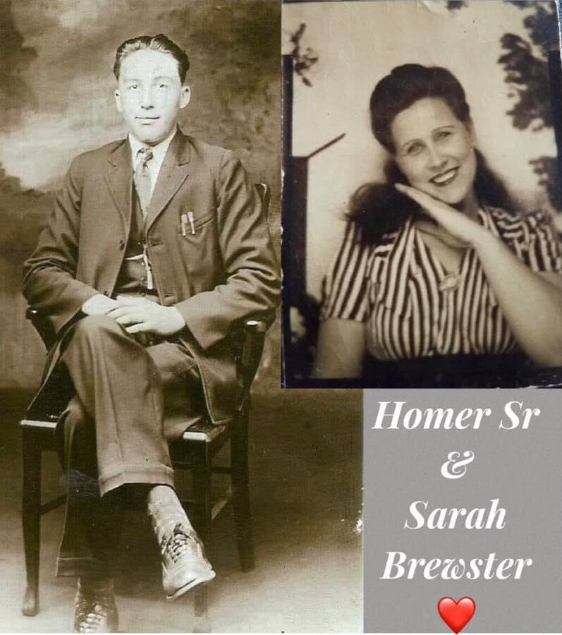
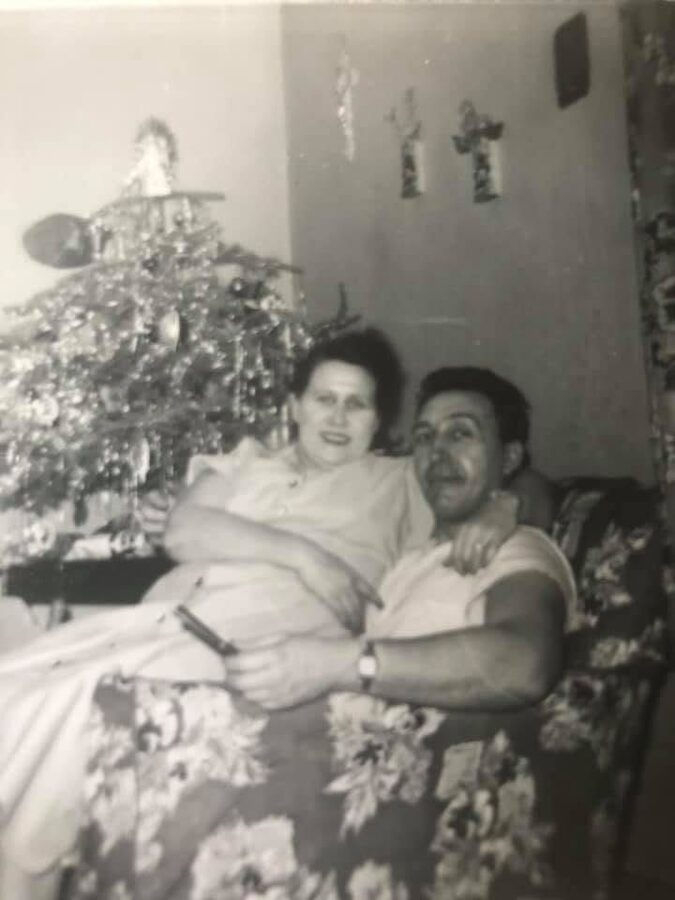

Kelly line · Calhoun, Georgia, and Cincinnati, Ohio
Also known as: Sallie Kelley; Sally Brewster; Sarah H. Brewster; Sarah Hazel (Kelley) Brewster
Profile status: DOCUMENTED
Quick Facts
Born
22 February 1912, Calhoun, Gordon County, Georgia SUPPORTED (shared headstone; 1940 and 1950 census ages). Her burial record gives 22 February 1911 and her obituary's age of 76 fits 1911; the year follows the headstone. Birthplace Calhoun comes from family records FAMILY ACCOUNT; the 1920 census gives Georgia DOCUMENTED
Married
Homer William Brewster Sr., 6 August 1930, Hamilton, Ohio DOCUMENTED (Ohio county marriage record). Some family trees say Cincinnati UNPROVED
Died
28 February 1987, a resident of Hamilton, Ohio DOCUMENTED (obituary, which gives her age as 76; headstone)
Buried
Spring Grove Cemetery, Cincinnati, Ohio, Section 134, Lot 54, Grave 6, on 3 March 1987, beside Homer under a shared stone DOCUMENTED
Residences
Aragon, Polk County, Georgia (1920); Ford Road, Morgan County, Tennessee (1935, 1940); Brewstertown, Morgan County (1936) SUPPORTED; 517 12th Street, Cincinnati (1950); 519 E. 12th Street (1953); Hamilton, Ohio (1987) DOCUMENTED
Bessie, William and Julia are in the 1920 census household with Sallie. Bessie's death record names James and Laura as her parents, but she was born about ten years before their marriage, so whether Laura was her mother is still open. Margaret is known only from family records.
1912 · age 0 Born (22 Feb), Calhoun, Gordon County, Georgia SUPPORTED
1920 · age 7 In her parents' household as "Sallie," with Bessie, William and Julia, Aragon, Polk County, GA DOCUMENTED
1930 · age 18 Married Homer William Brewster Sr. (6 Aug), Hamilton, Ohio DOCUMENTED
1931–1939 · age 19–27 Six children born, Tennessee and Ohio DOCUMENTED
1935 · age 23 Living on Ford Road, Morgan County, TN DOCUMENTED
1936 · age 24 Mother Laura died (4 Apr); "Mrs. Sally Brewster, daughter" gave the details, Brewstertown, Morgan County, TN SUPPORTED
1940 · age 28 Family of eight on Ford Road, same house as 1935, Morgan County, TN DOCUMENTED
1950 · age 38 Family at 517 12th Street, Cincinnati, Ohio DOCUMENTED
1952 · age 39 Twin sons Elmer and Earl joined the Marines (17 Jan), Cincinnati DOCUMENTED
1953 · age 41 Earl wounded at Pork Chop Hill (27 Jul); family at 519 E. 12th Street, Korea; Cincinnati DOCUMENTED
1959 · age 47 Son Earl killed in a car crash (22 Mar), U.S. 62, Kentucky DOCUMENTED
1987 · age 75 Died (28 Feb); buried at Spring Grove (3 Mar), Hamilton, OH; Cincinnati, OH DOCUMENTED
Life Story
Sarah Hazel Kelly was born on 22 February 1912 in Calhoun, Gordon County, Georgia, the daughter of James Patrick Kelly and Laura Bell Underwood. Her father, born in New York to Irish parents, was far older than her mother, who came from Mississippi. Family records say Sarah was born during a brief family move.
In January 1920 the census found her as "Sallie," listed at nine, in her parents' home at Aragon in Polk County, Georgia, with her older sister Bessie, her little brother William and her little sister Julia. The Kellys later settled in Morgan County, Tennessee. Julia went on to marry William Alexander Brewster, so the two families were joined twice over: Julia's husband was Sarah's father-in-law.
Sarah married Homer William Brewster Sr. on 6 August 1930 in Hamilton, Ohio. Six children followed through the 1930s: Eunice, Eugene, the twins Elmer and Earl, a daughter, and Homer Jr. In April 1936 her mother died at Brewstertown, and "Mrs. Sally Brewster, daughter" gave the details for the death certificate. In 1940 Sarah and Homer kept a household of eight on Ford Road in Morgan County.
By 1950 the family had moved to Cincinnati, to 517 12th Street, and by 1953 to 519 E. 12th Street. Her twin sons joined the Marines on their seventeenth birthday in January 1952. Earl was wounded at Pork Chop Hill, Korea, on 27 July 1953, the last day of the war, and was killed in a car crash in Kentucky in 1959. Her son Eugene also died before her.
Sarah died on 28 February 1987, a resident of Hamilton, Ohio; her obituary gave her age as seventy-six and asked for gifts to the American Cancer Society. She was buried at Spring Grove Cemetery in Cincinnati, where Homer joined her four years later under their shared stone. She left twenty-four grandchildren and thirty-seven great-grandchildren.
More of Sarah's story will be added as family members share their memories.
Photo Gallery
Sarah in a striped blouse, from the small portrait Homer kept in his walletThe wallet portrait itself, worn at the edges

Homer and Sarah, portraits

Sarah and Homer by the Christmas treeSpring Grove Cemetery, Cincinnati, where Sarah and Homer rest (the Fleischmann Mausoleum, not their grave)
Ohio County Marriages: Homer Brewster and Sarah Kelly, 6 Aug 1930, Hamilton, Ohio; her parents J. P. Kelly and Laura Underwood. Both indexed as age 21. FamilySearch https://www.familysearch.org/ark:/61903/1:1:2Q4J-61GDOCUMENTED
Tennessee death certificate No. 10441, Laura Bell Underwood Kelly, d. 4 Apr 1936, Brewstertown, Morgan County; informant "Mrs. Sally Brewster, daughter" DOCUMENTED (that Sally is Sarah is SUPPORTED)
1940 U.S. census, Ford Road, 12th Civil District, Morgan County, TN (ED 65-15, page 3B): Sarah H, 28, same house in 1935 DOCUMENTED
1950 U.S. census, 517 12th Street, Cincinnati (ED 91-136): Sarah H, 38 DOCUMENTED
Obituary of Sarah Hazel (nee Kelley) Brewster: d. Saturday 28 Feb 1987, age 76, resident of Hamilton, OH; Hodapp Funeral Home, College Hill; 24 grandchildren, 37 great-grandchildren. In the family collection DOCUMENTED
Cincinnati burial record, Spring Grove Cemetery: b. 22 Feb 1911, d. 28 Feb 1987, age 76; buried 3 Mar 1987, Section 134, Lot 54, Grave 6 DOCUMENTED
Shared headstone, Spring Grove Cemetery: Sarah H., Feb. 22, 1912 – Feb. 28, 1987; Homer W., Aug. 31, 1911 – Mar. 8, 1991; married Aug. 6, 1930. BillionGraves transcription agrees DOCUMENTED
Newspaper articles on son Earl's Korea wounding (1953, family at 519 E. 12th Street) and fatal crash; obituaries of Eunice Burton (1987), Homer Sr. (1991) and Elmer Brewster (1993), in the family collection DOCUMENTED
Family records: birth in Calhoun, Gordon County, Georgia, "during a brief family relocation"; sister Margaret FAMILY ACCOUNT
Grades: DOCUMENTED an original record says it · SUPPORTED several records point to it · FAMILY ACCOUNT the family's own telling · UNPROVED a lead, not proved.
Research Notes and Open Questions
Birth year: the headstone and the 1940 and 1950 census ages point to 1912, and the profile follows 1912. Her Spring Grove burial record says 22 Feb 1911, her obituary's age of 76 fits 1911, and the 1920 census age of 9 also fits 1911 better. Several family trees say 1911; the marriage record's age 21 implies about 1909. A Georgia birth record would settle it.
Marriage place: the Ohio marriage record reads Hamilton, Ohio; Geni, MyHeritage and some trees say Cincinnati or Hamilton County. Open.
Birthplace Calhoun, Gordon County, rests on family records; the 1920 census says only Georgia, and the family was in Polk County by then.
Her Ancestry profile wrongly carries death 18 Jul 1971, Dayton, Ohio, and marriage 4 Sep 1937. Both are contradicted by her obituary, burial record, headstone and marriage record and should be corrected there.
That "Mrs. Sally Brewster, daughter" on her mother's 1936 death certificate is Sarah fits well (she was called Sallie in 1920 and lived in Morgan County then) but is not stated outright.
Her father's dates (b. 8 May 1842, New York; d. about 1928, Tennessee) come from family records and trees; he would have been about 69 when she was born. Only his 1920 census entry is documented.
Maiden name is spelled Kelley in her obituary and the 1920 census, Kelly in most other records.